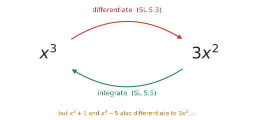
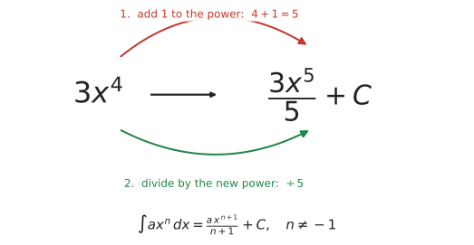
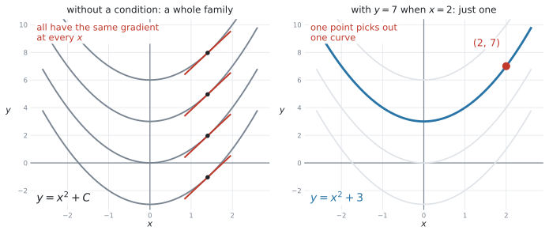
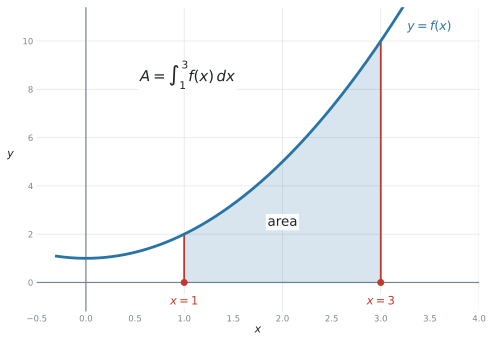
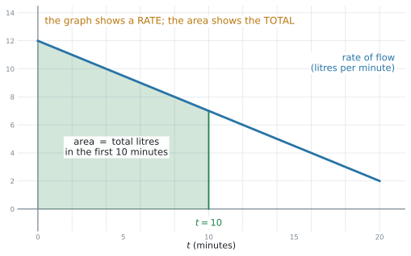

SL 5.5 — Introduction to integration（積分の導入 — 原始関数と面積）
- 積分は微分の逆だと分かる（anti-differentiation）。
- \(ax^n + bx^{n-1} + \ldots\) の形を積分できる（\(n\) は整数、\(n \neq -1\)）。
- \(+C\)（constant of integration）を必ず書く。
- boundary condition（境界条件。\(y = 10\) when \(x = 1\) など）から \(C\) の値を決められる。
- definite integral（定積分）を、電卓で求められる。
- 曲線 \(y = f(x)\) と \(x\) 軸ではさまれた面積を、\(\displaystyle\int_a^b y\,dx\) で求められる。
- 計算する前に、積分の式を書ける（シラバスが名指しで求めています）。
- 「変化率のグラフの面積 ＝ 合計」を、文脈の中で説明できる。
公式集の SL 5.5 の欄には、次の2つが印刷されています。
\[ \int x^{n}\,dx = \frac{x^{\,n+1}}{n+1} + C, \quad n \neq -1 \tag{1}\]
\[ A = \int_{a}^{b} y\,dx \tag{2}\]
式 2 の見出しは、公式集ではこう書かれています。
Area of region enclosed by a curve \(y = f(x)\) and the \(x\)-axis, where \(f(x) > 0\)
SL 5.3 とまったく同じ落とし穴があります。公式集の式には係数 \(a\) が付いていません。
試験に出るのは \(3x^{4}\) のように係数の付いた形です。覚えるのはこちらにしてください。
\[ \int a x^{n}\,dx = \frac{a\,x^{\,n+1}}{n+1} + C, \quad n \neq -1 \tag{3}\]
\(a\) は、そのまま前に残ります。
The idea
1. Integration（積分）は「微分の逆」です
シラバスの Content 欄の言葉が、そのまま答えです。
Introduction to integration as anti-differentiation of functions of the form \(f(x) = ax^{n} + bx^{n-1} + \ldots\), where \(n \in \mathbb{Z}\), \(n \neq -1\).
anti-differentiation（原始関数を求めること）── 「微分をほどく」という意味です。

図 1 のとおり、SL 5.3 で \(x^{3} \to 3x^{2}\) とやったことを、逆向きにたどります。
積分の記号
「\(3x^{2}\) の anti-derivative（原始関数）を求めなさい」を、記号ではこう書きます。
\[ \int 3x^{2} \, dx \]
読み方は「インテグラル \(3x^{2}\) ディーエックス」です。\(3\) つの部品でできています。
| 部品 | 名前 | 何を表すか |
|---|---|---|
| \(\displaystyle\int\) | integral sign（インテグラル） | 「これから積分します」という合図 |
| \(3x^{2}\) | integrand（被積分関数） | 積分する式。ここが本体 |
| \(dx\) | 「\(x\) について積分します」という意味 |
\(\displaystyle\int\) と \(dx\) は、\(2\) つで \(1\) 組のかっこだと思ってください。積分する式は、この間にはさみます。
\(\displaystyle\int 3x^{2}\) だけでは、式が閉じていません。\(\displaystyle\int\) を書いたら、\(dx\) まで書いて \(1\) つです。
文字が \(t\) なら \(dt\)、\(r\) なら \(dr\) です。問題文で使われている文字に合わせます。
積分の答えが合っているかは、微分してもとに戻るかを見れば分かります。
\[ \int 3x^{2}\,dx = x^{3} + C \quad \Rightarrow \quad \frac{d}{dx}\left(x^{3}+C\right) = 3x^{2} \quad ✓ \]
この項目の検算は、これ1つです。 答えを書いたら必ずやってください。\(10\) 秒で終わります。
2. 公式：1 足して、その数で割る
微分は「下ろして掛ける、1 減らす」でした。積分は、その逆です。
- 指数に \(1\) 足す
- その新しい指数で割る

図 2 では \(3x^{4}\) を積分しています。
- 指数に \(1\) 足して、\(4 + 1 = 5\)
- その \(5\) で割って、\(\dfrac{3x^{5}}{5}\)
\[ \int 3x^{4}\,dx = \frac{3x^{5}}{5} + C \]
検算。 \(\dfrac{3}{5} \times 5 x^{4} = 3x^{4}\) ✓
項がいくつあっても、項ごとに同じことをします。
| \(f(x)\) の項 | どうするか | 積分した項 |
|---|---|---|
| \(6x^{2}\) | 指数 \(3\)、\(6 \div 3 = 2\) | \(2x^{3}\) |
| \(-4x\) | \(x = x^{1}\)、指数 \(2\)、\(-4 \div 2 = -2\) | \(-2x^{2}\) |
| \(5\) | \(5 = 5x^{0}\)、指数 \(1\)、\(5 \div 1 = 5\) | \(5x\) |
\[ \int \left(6x^{2} - 4x + 5\right)dx = 2x^{3} - 2x^{2} + 5x + C \]
\(5\) を積分すると \(5x\) です。\(5\) のままではありません。
\(5 = 5x^{0}\) と考えれば、指数が \(1\) になって \(5x^{1} = 5x\)。
微分では定数が消えました。積分では、定数から \(x\) が生まれます。 ちょうど逆です。
\(n = -1\)、つまり \(\dfrac{1}{x}\) だけは、この公式が使えません。指数に \(1\) 足すと \(0\) になり、\(0\) で割ることになるからです。
\[ \frac{x^{0}}{0} \qquad ✗ \]
AI SL では \(\dfrac{1}{x}\) の積分は出ません。 公式集にも \(n \neq -1\) と書いてあります。気にしなくて構いません。
\(\dfrac{1}{x^{2}}\)、\(\dfrac{1}{x^{3}}\) は \(n = -2\)、\(n = -3\) なので出ます。
3. \(+C\) を必ず書きます
微分すると定数は消えます。ですから逆をたどると、もとの定数が何だったか分かりません。

図 3 の左を見てください。\(y = x^{2} - 3\)、\(y = x^{2}\)、\(y = x^{2} + 3\)、\(y = x^{2} + 6\) ── どれも微分すれば \(2x\) です。
上下にずれているだけで、どの \(x\) でも傾きは同じだからです。
だから、答えはどれか1つには決まりません。
\[ \int 2x\,dx = x^{2} + C \]
この \(C\) を constant of integration（積分定数）といいます。
この項目で一番多い失点です。
Find ∫ ... dx と書かれていたら、答えには必ず \(+C\) が要ります。
（定積分、つまり \(\displaystyle\int_a^b\) のときは \(C\) は要りません。第5節で説明します。）
4. boundary condition で \(C\) を決めます
シラバスは、この形を名指ししています。
Anti-differentiation with a boundary condition to determine the constant term.
さらに、Guidance 欄に例まで書いてあります。
Example: If \(\dfrac{dy}{dx} = 3x^{2} + x\) and \(y = 10\) when \(x = 1\), then \(y = x^{3} + \dfrac{1}{2}x^{2} + 8.5\).
boundary condition（境界条件／条件として与えられた点）とは、「\(x\) がこの値のとき \(y\) はこれ」という1組の情報です。
図 3 の右のように、たくさんある曲線の中から1本を選ぶ役目をします。
手順は3つです。
- 積分して、\(+C\) 付きの式を書く
- 与えられた \(x\) と \(y\) を代入する
- \(C\) について解いて、式に書き戻す
\(\dfrac{dy}{dx} = 2x\) で \(y = 7\) のとき \(x = 2\) なら、
\[ y = x^{2} + C \quad \Rightarrow \quad 7 = 2^{2} + C \quad \Rightarrow \quad C = 3 \]
\[ y = x^{2} + 3 \]
\(C = 3\) を求めて終わりにしてはいけません。問われているのは \(y\) の式です。
\[ C = 3 \qquad ✗ \qquad\qquad y = x^{2} + 3 \qquad ✓ \]
5. definite integral（定積分）と面積
definite integral（定積分）は、\(\displaystyle\int_a^b\) のように上と下に数が付いた積分です。値が1つの数に決まります。
シラバスの Guidance 欄が、この項目の要点を書いています。
Students should be aware of the link between anti-derivatives, definite integrals and area.

図 4 の色をぬった部分が、その面積です。
以下では \(f(x) > 0\)、つまり曲線が \(x\) 軸より上にある場合を扱います。この場合、定積分の値がそのまま面積になります。
公式集の式は次のとおりです。
\[ A = \int_{a}^{b} y\,dx \]
\(a\) が左、\(b\) が右です。
定積分は数になります。\(C\) は引き算で消えるので、書く必要がありません。
- \(\displaystyle\int f(x)\,dx\) … 式が答え → \(+C\) が要る
- \(\displaystyle\int_a^b f(x)\,dx\) … 数が答え → \(+C\) は要らない
上下に数が付いているかどうかを見て、判断してください。
公式集には「曲線が \(x\) 軸より上にあるとき」と書かれています。
軸より下の部分があると、定積分は負の値を返します。面積は負になりませんから、そのままでは答えになりません。
SL 5.5 で面積として求めるのは、\(f(x) > 0\) の領域です。 図をかいて、軸の上にあることを確かめてから進んでください。
6. 計算する前に、式を書きます
シラバスが名指しで要求しているところです。ここは点に直結します。
Definite integrals using technology. Students are expected to first write a correct expression before calculating the area, for example \(\displaystyle\int_{2}^{6}\left(3x^{2}+4\right)dx\).
つまり、
- まず \(\displaystyle\int_{2}^{6}\left(3x^{2}+4\right)dx\) と書く
- それから電卓で値を出す
\[ A = 224 \qquad ✗ \]
\[ A = \int_{2}^{6}\left(3x^{2}+4\right)dx = 224 \qquad ✓ \]
式の行が method mark（過程の点）です。値だけでは、そこがもらえません。
using technology と書かれていても、式を書かなくてよい、という意味ではありません。
7. 変化率のグラフでは、面積が「合計」です
シラバスの Connections 欄は Other contexts: Velocity-time graphs と書いています。AI でよく出る使い方です。

図 5 のグラフは、1分あたり何リットル流れているか（rate）を示しています。高さは「速さ」であって「量」ではありません。
色をぬった面積が、最初の10分で流れた合計の量です。
| グラフの縦軸 | 面積の意味 |
|---|---|
| 速度（m / 秒） | 進んだ距離（m） |
| 流量（L / 分） | 流れた合計の量（L） |
| 費用の変化率（円 / 個） | 増えた費用（円） |
単位を見れば分かります。 \(\dfrac{\text{L}}{\text{分}} \times \text{分} = \text{L}\)。縦の単位と横の単位を掛けたものが、面積の単位です。
Why it works
なぜ「定積分＝面積」なのかを、ざっくり説明します。
面積を、細いたんざく（長方形）に切り分けるところから始めます。
幅を \(\Delta x\)、高さを \(f(x)\) とすると、\(1\) 本のたんざくの面積は \(f(x) \times \Delta x\) です。全部足すと、だいたいの面積になります。
\[ A \approx \sum f(x)\,\Delta x \]
\(\Delta x\) をどんどん細くしていくと、この和は本当の面積に近づきます（SL 5.1 の極限と同じ考え方です）。その行き先を
\[ A = \int_{a}^{b} f(x)\,dx \]
と書きます。記号 \(\displaystyle\int\) は、足し算の S（sum）を縦に伸ばしたものです。\(dx\) は、細くなった \(\Delta x\) です。
では、なぜ原始関数で計算できるのでしょうか。
左端 \(a\) から \(x\) までの面積を \(A(x)\) とします。\(x\) を少しだけ \(\Delta x\) 増やすと、面積は細いたんざく1本ぶん増えます。
\[ A(x + \Delta x) - A(x) \approx f(x)\,\Delta x \]
両辺を \(\Delta x\) で割ると、
\[ \frac{A(x + \Delta x) - A(x)}{\Delta x} \approx f(x) . \]
左辺は、SL 5.1 で見た弦の傾きそのものです。\(\Delta x \to 0\) とすると、
\[ A'(x) = f(x) . \]
面積の関数を微分すると、もとの関数に戻る。 つまり、面積の関数は \(f\) の原始関数です。
だから、原始関数 \(F\) を使って
\[ \int_{a}^{b} f(x)\,dx = F(b) - F(a) \]
と計算できます。\(C\) は引き算で消えるので、定積分に \(C\) は要りません。
この説明は、試験には出ません。 シラバスが求めているのは be aware of the link（つながりを知っていること）だけです。
証明を書けと言われることはありません。 ここを読むのは、「なぜ？」が気になる人のためのおまけです。
Worked examples
問題文は英語です。意味が理解できなかったら、問題文の下の「日本語訳」を開いてください。解説は日本語です。
例題 1 Find \(\displaystyle\int \left(6x^{2} - 4x + 5\right)dx\).
日本語訳
\(\displaystyle\int \left(6x^{2} - 4x + 5\right)dx\) を求めなさい。
項ごとに、「\(1\) 足して、その数で割る」をします。
- \(6x^{2}\) … 指数は \(3\)、\(6 \div 3 = 2\) → \(2x^{3}\)
- \(-4x\) … 指数は \(2\)、\(-4 \div 2 = -2\) → \(-2x^{2}\)
- \(5\) … 指数は \(1\)、\(5 \div 1 = 5\) → \(5x\)
\[ \int \left(6x^{2} - 4x + 5\right)dx = 2x^{3} - 2x^{2} + 5x + C \]
\[ \frac{d}{dx}\left(2x^{3} - 2x^{2} + 5x + C\right) = 6x^{2} - 4x + 5 \quad ✓ \]
もとに戻りました。この一手間で、係数の割り忘れが全部見つかります。
\(\displaystyle\int \left(6x^{2} - 4x + 5\right)dx = 2x^{3} - 2x^{2} + 5x + C\)
例題 2 It is given that \(\dfrac{dy}{dx} = 4x - 3\), and that \(y = 5\) when \(x = 2\).
Find an expression for \(y\) in terms of \(x\).
日本語訳
\(\dfrac{dy}{dx} = 4x - 3\) であり、\(x = 2\) のとき \(y = 5\) であることが分かっています。
\(y\) を \(x\) の式で表しなさい。
手順1 … 積分します。 \(+C\) を忘れずに。
\[ y = 2x^{2} - 3x + C \]
手順2 … \(x = 2\)、\(y = 5\) を代入します。
\[ 5 = 2(2)^{2} - 3(2) + C = 8 - 6 + C = 2 + C \]
手順3 … \(C\) を求めて、書き戻します。
\[ C = 3 \quad \Rightarrow \quad y = 2x^{2} - 3x + 3 \]
- 微分して戻るか：\(\dfrac{d}{dx}\left(2x^{2}-3x+3\right) = 4x - 3\) ✓
- 点を通るか：\(x = 2\) を入れると \(8 - 6 + 3 = 5\) ✓
両方合えば、まず間違いありません。
\(y = 2x^{2} - 3x + C\)
When \(x = 2\), \(y = 5\): \(5 = 8 - 6 + C\), so \(C = 3\)
\(y = 2x^{2} - 3x + 3\)
例題 3 Find \(\displaystyle\int \dfrac{6}{x^{3}}\,dx\), giving your answer as a fraction.
日本語訳
\(\displaystyle\int \dfrac{6}{x^{3}}\,dx\) を求めなさい。答えは分数の形で書きなさい。
まず書き直します。 SL 5.3 と同じです。分数のままでは公式が使えません。
\[ \frac{6}{x^{3}} = 6x^{-3} \]
指数に \(1\) 足します。 \(-3 + 1 = -2\)。
その \(-2\) で割ります。
\[ \frac{6x^{-2}}{-2} = -3x^{-2} \]
分数に戻します。
\[ \int \frac{6}{x^{3}}\,dx = -\frac{3}{x^{2}} + C \]
\(-3\) に \(1\) を足すと \(-2\) です。\(-4\) ではありません。
数直線の上で、\(-3\) から右へ \(1\) つ動きます。
\[ -3 + 1 = -2 \qquad ✓ \qquad\qquad -3 + 1 = -4 \qquad ✗ \]
微分のときは左へ \(1\) つ（\(-2 \to -3\)）でした。積分は逆向きです。
\[ \frac{d}{dx}\left(-3x^{-2}\right) = -3 \times (-2) x^{-3} = 6x^{-3} = \frac{6}{x^{3}} \quad ✓ \]
\(\displaystyle\int \frac{6}{x^{3}}\,dx = \int 6x^{-3}\,dx = \frac{6x^{-2}}{-2} + C = -\frac{3}{x^{2}} + C\)
例題 4 The diagram in 図 4 shows the curve \(y = x^{2} + 1\).
Find the area of the region enclosed by the curve, the \(x\)-axis, and the lines \(x = 1\) and \(x = 3\).
まず式を書きます。 これが point の行です。
\[ A = \int_{1}^{3}\left(x^{2} + 1\right)dx \]
それから値を出します。 電卓で（GDCの使い方）
\[ A = \frac{32}{3} = 10.7 \quad (3 \text{ s.f.}) \]
手で出すこともできます（必須ではありません）。原始関数を作って、上から下を引きます。
\[ \left[\frac{x^{3}}{3} + x\right]_{1}^{3} = \left(9 + 3\right) - \left(\frac{1}{3} + 1\right) = 12 - \frac{4}{3} = \frac{32}{3} \]
シラバスは Definite integrals using technology と書いているので、電卓で出して構いません。 手計算は検算に使ってください。
図 4 の領域は、だいたい横 \(2\)、高さ \(2\) 〜 \(10\) です。長方形なら \(2 \times 2 = 4\) から \(2 \times 10 = 20\) のあいだ。
\(10.7\) はその真ん中あたりです。桁が合っていると分かります。
\(100\) や \(0.1\) が出たら、どこかで間違えています。
\(A = \displaystyle\int_{1}^{3}\left(x^{2} + 1\right)dx = \dfrac{32}{3} = 10.7\) (3 s.f.)
例題 5 Water flows into a tank. The rate of flow, in litres per minute, \(t\) minutes after the tap is opened, is modelled by
\[ r(t) = 12 - 0.5t, \qquad 0 \le t \le 20 . \]
(a) Write down an expression for the total volume of water that flows into the tank during the first \(10\) minutes.
(b) Find this volume.
(c) Interpret your answer in the context of the question.
日本語訳
水がタンクに流れこみます。蛇口を開けてから \(t\) 分後の流量（1分あたりのリットル数）は、次の式でモデル化されます。
\[ r(t) = 12 - 0.5t, \qquad 0 \le t \le 20 . \]
(a) 最初の \(10\) 分間にタンクに流れこむ水の合計の量を表す式を書きなさい。
(b) この量を求めなさい。
(c) 答えを、問題の文脈で解釈しなさい。
(a) グラフの面積が合計です。\(t = 0\) から \(t = 10\) まで。
\[ V = \int_{0}^{10}\left(12 - 0.5t\right)dt \]
(b) 電卓で（GDCの使い方）
\[ V = 95 \]
(c) 単位はリットルです。\(\dfrac{\text{L}}{\text{分}} \times \text{分} = \text{L}\)。
試験ではこう書く
In the first \(10\) minutes, a total of \(95\) litres of water flows into the tank.
(a) は Write down an expression です。値を出す必要はありません。 式を書けば、それで点になります。
シラバスが first write a correct expression before calculating と指定しているのは、まさにこの形です。
\(r(10) = 12 - 5 = 7\) は、\(10\) 分の時点での流れる速さ（1分あたり \(7\) L）です。合計の量ではありません。
縦軸の値は「速さ」、面積が「合計」。 図 5 をもう一度見てください。
(a) \(V = \displaystyle\int_{0}^{10}\left(12 - 0.5t\right)dt\)
(b) \(V = 95\) litres
(c) In the first \(10\) minutes, a total of \(95\) litres of water flows into the tank.
Common errors
この項目で一番多い失点です。
上下に数が付いていない積分（indefinite integral）の答えには、必ず \(+C\) が要ります。
\(\displaystyle\int_a^b\) の答えは数です。\(+C\) は書きません。
上下に数が付いているかどうかで決まります。
\[ \int 3x^{4}\,dx = 12x^{3} + C \qquad ✗ \]
これは微分してしまっています。積分は \(\dfrac{3x^{5}}{5} + C\)。
指数が増えるのが積分、減るのが微分。 答えを見て、指数の向きを確かめてください。
\[ \int 3x^{4}\,dx = 3x^{5} + C \qquad ✗ \]
\(1\) 足しただけで止まっています。「\(1\) 足して、その数で割る」の \(2\) 手セットです。
微分して検算すれば、すぐ気づきます。
\[ \int \left(2x + 5\right)dx = x^{2} + C \qquad ✗ \]
\(5\) が消えています。定数を積分すると \(5x\) が出ます。
\[ \int \left(2x + 5\right)dx = x^{2} + 5x + C \qquad ✓ \]
\(-3 + 1 = -2\) です。\(-4\) ではありません。
積分は右へ \(1\)、微分は左へ \(1\)。
Find an expression for y と聞かれているのに、\(C = 3\) で終わってしまう誤りです。
答えは \(y = \ldots\) の形でなければなりません。
y = 5 when x = 2 なら、\(x\) に \(2\)、\(y\) に \(5\) です。
英語の順番が「\(y\) が先」なので、つられて逆に入れる誤りが起きます。日本語で「\(x\) が \(2\) のとき \(y\) が \(5\)」と言い直してから代入してください。
シラバスが first write a correct expression と名指ししています。
\(\displaystyle\int_a^b(\ldots)dx\) の行がないと、method mark がもらえません。
\(\displaystyle\int_{a}^{b}\) の \(a\) が左（小さいほう）、\(b\) が右（大きいほう）です。
逆に入れると、符号が反対になります。面積が負になったら、まずここを疑ってください。
「合計はいくらか」と聞かれたら、面積です。グラフの高さではありません。
縦軸は「速さ」、面積が「合計」。
面積が現実の量を表しているときは、単位が要ります（litres、metres、dollars など）。
Interpret の設問では、単位のない数だけでは点になりません。
Using your GDC (TI-Nspire CX II)
シラバスは Definite integrals **using technology** と書いています。定積分の値は、電卓で出すのが前提です。
1. Calculator ページで、直接計算する
menu → Calculus → Numerical Integralテンプレートが出るので、下に \(a\)、上に \(b\)、まん中に式、最後に変数を入れます。
\[ \int_{1}^{3}\left(x^{2}+1\right)dx \ \longrightarrow \ 10.6667 \]
答えは \(10.7\)（\(3\) 桁の有効数字） と書けば十分です。\(\dfrac{32}{3}\) と書いても正解です。
2. Graphs ページで、面積を見ながら出す
グラフを見ながら求めたいときは、こちらです。
f1(x) = x^2+1
menu → Analyze Graph → Integral左の境界（\(x = 1\)）と右の境界（\(x = 3\)）を指定すると、面積が画面に色付きで表示され、値も出ます。 ここでも enter は \(2\) 回です（→ SL 2.4）。
シラバスが The use of dynamic geometry or graphing software is encouraged と書いているのは、この使い方です。
色のついた領域を見れば、「そのくらいの面積だな」と納得できます。 桁の間違いも防げます。
3. 検算は「微分して戻るか」
不定積分の答えを確かめるときは、自分の答えを微分して、もとの式に戻るか見ます。
menu → Calculus → Numerical Derivative at a Point\(2x^{3}-2x^{2}+5x\) を \(x = 2\) で微分すると \(6(4)-4(2)+5 = 21\)。もとの式 \(6x^{2}-4x+5\) に \(x=2\) を入れても \(21\) ✓
\(1\) 点で合えば、まず間違いありません。
4. 不定積分は、電卓では出せません
\(\displaystyle\int \left(6x^{2}-4x+5\right)dx\) のような式の答えは、CAS でない機種では出てきません。
\[ 2x^{3} - 2x^{2} + 5x + C \]
これは必ず手で書きます。 SL 5.3 の微分と同じ事情です。
| やること | 電卓 |
|---|---|
| \(\displaystyle\int f(x)\,dx\)（式を求める） | 使えない。手で書く |
| \(C\) を求める | 使わない。代入するだけ |
| \(\displaystyle\int_a^b f(x)\,dx\)（値を求める） | 使う（シラバスがそう指定） |
| 面積を目で確かめる | 使う（Graphs → Integral） |
| 積分の答えの検算 | 使える。微分して戻るか見る |
Exercises
各問題に、折りたたみが3つ付いています。日本語訳、解答例（答案用紙に書くべきこと。英語です）、解説（なぜそうなるか。日本語です）。
まず自分で解いて、次に解答例と見くらべてください。解説は、合わなかったときだけ開けば十分です。
1 Find \(\displaystyle\int \left(8x^{3} - 6x + 1\right)dx\).
日本語訳
\(\displaystyle\int \left(8x^{3} - 6x + 1\right)dx\) を求めなさい。
\(2x^{4} - 3x^{2} + x + C\)
項ごとに「\(1\) 足して、その数で割る」。
- \(8x^{3}\) … 指数 \(4\)、\(8 \div 4 = 2\) → \(2x^{4}\)
- \(-6x\) … 指数 \(2\)、\(-6 \div 2 = -3\) → \(-3x^{2}\)
- \(1\) … 指数 \(1\)、\(1 \div 1 = 1\) → \(x\)
検算。 微分すると \(8x^{3} - 6x + 1\) ✓ \(+C\) を忘れずに。
2 Find \(\displaystyle\int \left(10x^{4} + 3x^{2} - 7\right)dx\).
日本語訳
\(\displaystyle\int \left(10x^{4} + 3x^{2} - 7\right)dx\) を求めなさい。
\(2x^{5} + x^{3} - 7x + C\)
- \(10x^{4}\) … 指数 \(5\)、\(10 \div 5 = 2\) → \(2x^{5}\)
- \(3x^{2}\) … 指数 \(3\)、\(3 \div 3 = 1\) → \(x^{3}\)（\(1x^{3}\) とは書きません）
- \(-7\) … → \(-7x\)
\(-7\) が消えないことが要点です。微分とは逆で、定数からは \(x\) が生まれます。
3 Find each of the following.
(a) \(\displaystyle\int 4\,dx\)
(b) \(\displaystyle\int 6x\,dx\)
(c) \(\displaystyle\int x^{3}\,dx\)
日本語訳
次のそれぞれを求めなさい。
(a) \(4x + C\)
(b) \(3x^{2} + C\)
(c) \(\dfrac{x^{4}}{4} + C\)
(a) \(4 = 4x^{0}\) なので、指数は \(1\)、\(4 \div 1 = 4\) → \(4x\)。
(b) 指数は \(2\)、\(6 \div 2 = 3\) → \(3x^{2}\)。
(c) 係数は \(1\)。指数は \(4\)、\(1 \div 4 = \dfrac{1}{4}\) → \(\dfrac{x^{4}}{4}\)。
割り切れなくても構いません。 \(\dfrac{x^{4}}{4}\) でも \(0.25x^{4}\) でも正解です。
4 Find each of the following, giving your answers as fractions.
(a) \(\displaystyle\int \dfrac{2}{x^{2}}\,dx\)
(b) \(\displaystyle\int \dfrac{12}{x^{4}}\,dx\)
日本語訳
次のそれぞれを求めなさい。答えは分数の形で書きなさい。
(a) \(\displaystyle\int 2x^{-2}\,dx = \dfrac{2x^{-1}}{-1} + C = -\dfrac{2}{x} + C\)
(b) \(\displaystyle\int 12x^{-4}\,dx = \dfrac{12x^{-3}}{-3} + C = -\dfrac{4}{x^{3}} + C\)
まず書き直します。 \(\dfrac{2}{x^{2}} = 2x^{-2}\)、\(\dfrac{12}{x^{4}} = 12x^{-4}\)。
(a) \(-2 + 1 = -1\)。その \(-1\) で割るので、符号が変わります。
(b) \(-4 + 1 = -3\)。\(12 \div (-3) = -4\)。
どちらも答えがマイナスになります。検算。 \(\dfrac{d}{dx}\left(-4x^{-3}\right) = 12x^{-4}\) ✓
5 It is given that \(\dfrac{dy}{dx} = 6x^{2} - 2\), and that \(y = 4\) when \(x = 1\).
Find an expression for \(y\) in terms of \(x\).
日本語訳
\(\dfrac{dy}{dx} = 6x^{2} - 2\) であり、\(x = 1\) のとき \(y = 4\) であることが分かっています。
\(y\) を \(x\) の式で表しなさい。
\(y = 2x^{3} - 2x + C\)
When \(x = 1\), \(y = 4\): \(4 = 2 - 2 + C\), so \(C = 4\)
\(y = 2x^{3} - 2x + 4\)
\(2 - 2 = 0\) なので、\(C\) がそのまま \(4\) になります。
\(C = 4\) で止めないでください。 答えは \(y = 2x^{3} - 2x + 4\) です。
検算。 \(x = 1\) を入れると \(2 - 2 + 4 = 4\) ✓
6 A function \(f\) satisfies \(f'(x) = 3x^{2} + 4x\) and \(f(-1) = 5\).
Find \(f(x)\).
日本語訳
ある関数 \(f\) は \(f'(x) = 3x^{2} + 4x\) をみたし、\(f(-1) = 5\) です。
\(f(x)\) を求めなさい。
\(f(x) = x^{3} + 2x^{2} + C\)
\(f(-1) = 5\): \(-1 + 2 + C = 5\), so \(C = 4\)
\(f(x) = x^{3} + 2x^{2} + 4\)
\(4x\) の積分は \(2x^{2}\) です。指数は \(2\)、\(4 \div 2 = 2\)。
代入するのは \(x = -1\) です。\((-1)^{3} = -1\)、\(2(-1)^{2} = +2\)。符号に注意してください。
検算。 \(f(-1) = -1 + 2 + 4 = 5\) ✓
7 Find the value of \(\displaystyle\int_{1}^{4}\left(2x + 3\right)dx\).
日本語訳
\(\displaystyle\int_{1}^{4}\left(2x + 3\right)dx\) の値を求めなさい。
\(\displaystyle\int_{1}^{4}\left(2x + 3\right)dx = 24\)
定積分なので、\(+C\) は要りません。 答えは数です。
電卓（Numerical Integral）に入れれば \(24\) と返ります。
手で出すなら \(\left[x^{2} + 3x\right]_{1}^{4} = (16+12) - (1+3) = 28 - 4 = 24\)。
検算。 \(y = 2x+3\) は直線なので、この領域は台形です。上底 \(y(1) = 5\)、下底 \(y(4) = 11\)、高さ \(3\) で \(\dfrac{(5+11) \times 3}{2} = 24\) ✓
8 Find the area of the region enclosed by the curve \(y = x^{2}\), the \(x\)-axis, and the lines \(x = 0\) and \(x = 3\).
日本語訳
曲線 \(y = x^{2}\)、\(x\) 軸、および直線 \(x = 0\)、\(x = 3\) で囲まれた領域の面積を求めなさい。
\(A = \displaystyle\int_{0}^{3} x^{2}\,dx = 9\)
式の行を必ず書いてください。 \(A = \displaystyle\int_{0}^{3} x^{2}\,dx\) が method mark です。
\(0 \le x \le 3\) では \(x^{2} \ge 0\)、つまり曲線は \(x\) 軸より上にあります。公式集の条件 \(f(x) > 0\) をみたしています ✓
検算。 この領域は、たて \(9\)・よこ \(3\) の長方形（面積 \(27\)）の中に入っています。\(9\) はその \(\dfrac{1}{3}\)。桁は合っています。
9 The curve \(y = 6x - x^{2}\) crosses the \(x\)-axis at two points.
(a) Find the \(x\)-coordinates of these two points.
(b) Write down an expression for the area of the region enclosed by the curve and the \(x\)-axis.
(c) Find this area.
日本語訳
曲線 \(y = 6x - x^{2}\) は \(x\) 軸と \(2\) 点で交わります。
(a) この \(2\) 点の \(x\) 座標を求めなさい。
(b) 曲線と \(x\) 軸で囲まれた領域の面積を表す式を書きなさい。
(c) この面積を求めなさい。
(a) \(6x - x^{2} = 0\), so \(x(6 - x) = 0\), giving \(x = 0\) and \(x = 6\)
(b) \(A = \displaystyle\int_{0}^{6}\left(6x - x^{2}\right)dx\)
(c) \(A = 36\)
(a) \(x\) 軸との交点は \(y = 0\) のときです。共通因数 \(x\) でくくります。
(b) その \(2\) つの交点が、そのまま積分の下と上になります。\(0\) が下、\(6\) が上です。
(c) 電卓で \(36\)。
上に凸の放物線なので、\(0 < x < 6\) では \(y > 0\)、つまり \(x\) 軸より上です ✓
検算。 一番高いところは \(x = 3\) で \(y = 18 - 9 = 9\)。よこ \(6\)・たて \(9\) の長方形が \(54\)。放物線の下の面積はその \(\dfrac{2}{3}\) で \(36\) です ✓
10 A car travels in a straight line. Its speed, in metres per second, \(t\) seconds after it starts to slow down, is modelled by
\[ v(t) = 20 - 0.8t, \qquad 0 \le t \le 25 . \]
(a) Write down an expression for the distance travelled during the first \(10\) seconds.
(b) Find this distance.
(c) Interpret your answer in the context of the question.
日本語訳
車が直線上を走っています。減速を始めてから \(t\) 秒後の速さ（m / 秒）は、次の式でモデル化されます。
\[ v(t) = 20 - 0.8t, \qquad 0 \le t \le 25 . \]
(a) 最初の \(10\) 秒間に進んだ距離を表す式を書きなさい。
(b) この距離を求めなさい。
(c) 答えを、問題の文脈で解釈しなさい。
(a) \(d = \displaystyle\int_{0}^{10}\left(20 - 0.8t\right)dt\)
(b) \(d = 160\)
(c) The car travels \(160\) metres during the first \(10\) seconds.
速度のグラフの面積は、距離です（この節）。単位で確かめられます。\(\dfrac{\text{m}}{\text{秒}} \times \text{秒} = \text{m}\)。
(c) に metres を必ず付けてください。単位のない \(160\) では点になりません。
\(v(10) = 12\) と答えないように。 それは \(10\) 秒後の速さです。
検算。 台形の面積で \(\dfrac{(20 + 12) \times 10}{2} = 160\) ✓
11 A function \(f\) satisfies \(f'(x) = 3x^{2} - 6x - 9\) and \(f(1) = -6\).
(a) Find \(f(x)\).
(b) Find the values of \(x\) for which the tangent to the graph of \(f\) is horizontal.
日本語訳
ある関数 \(f\) は \(f'(x) = 3x^{2} - 6x - 9\) をみたし、\(f(1) = -6\) です。
(a) \(f(x)\) を求めなさい。
(b) \(f\) のグラフの接線が水平になる \(x\) の値を求めなさい。
(a) \(f(x) = x^{3} - 3x^{2} - 9x + C\)
\(f(1) = -6\): \(1 - 3 - 9 + C = -6\), so \(C = 5\)
\(f(x) = x^{3} - 3x^{2} - 9x + 5\)
(b) \(3x^{2} - 6x - 9 = 3(x - 3)(x + 1) = 0\), so \(x = 3\) and \(x = -1\)
出てきた関数を見てください。 \(f(x) = x^{3} - 3x^{2} - 9x + 5\) ── これは SL 5.2 の演習6、SL 5.3 の演習11、SL 5.4 の演習11 と同じ関数です。
- SL 5.3 では、この関数を微分して \(3x^{2}-6x-9\) を出しました
- SL 5.5 では、\(3x^{2}-6x-9\) を積分して、もとの関数に戻りました
boundary condition \(f(1) = -6\) があるからこそ、\(+5\) まで戻せます。 これがないと \(C\) は分かりません。
(b) は SL 5.4 と同じです。\(f'(x) = 0\) を解くだけ。積分する前の式がそのまま使えます。